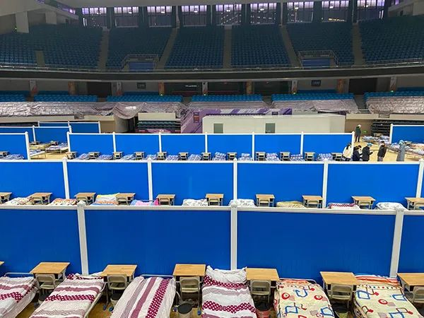

特写|“网红”医生余昌平：除了生死，都是小事
原文链接 备份链接 【财新网】（实习记者 黄雨馨）“目前，信心就是最好的特效药。”“网红”医生余昌平说。“原则上来说，现在病毒没有药物可以治疗，身体、心态、吃好喝好睡好休息好，这是最好的治疗。” 2月23日是余昌平住院第38天。作为武汉大 …
实习生 陈媛媛 澎湃新闻记者 任雾
李阳阳还没回过神来。短短十余日，他毫无预料地成为逃离武汉的一员，更没想到父母感染上新冠肺炎，卷入疫情风波之中。
“儿子，帮爸打个120吧……”2月9日，高烧十一天后，从不求人的李阳阳父亲李德玉，用气若游丝般的声音在电话里向儿子恳求道。
30岁的李阳阳很平静地挂了电话，他心里一阵难受。他已经打了各种电话，但是没有用，尽管父亲的CT显示肺部感染，但两次核酸检测都是阴性，不满足收治条件。
此时父亲的喘气声已经十分粗重，听着声音，他似乎能看到父亲艰难起落的胸膛。
2月8日，中央指导组要求“应收尽收，刻不容缓”。紧接着，2月12日，国家卫健委发布《新型冠状病毒感染的肺炎治疗（试行第五版）》，其中写明疑似病例只要具有肺炎影像学特征者，为临床诊断病例。这意味着只要CT符合症状，就按确诊病例收治。
恰逢其时，李阳阳父母被收治了，他从没想过，有一天会因为父母都住进了病房而感到安心。
以下是李阳阳的口述
“没敢相信武汉封城了”
直到火车向前奔去，我都没敢相信武汉封城了。

1月26日，航拍武汉城市道路。
1月18日，我从单位回了家，计划在家待五天。20日的傍晚，我们家一个在医院做护士的亲戚来串门，聊天时她谈到了疫情，说现在这个新冠肺炎传染性极强。她听说很多医院的工作人员因为没有做好防护被感染了，而且医院人满为患，去看病弄不好要交叉传染。
她这么一说，我们一家人都很紧张，气氛一下子凝重了。一月初，我和爸说过这事，他当时不屑一顾。这时，亲戚在讲，他沉着脸，不说话。我爸有点大男子主义，认准自己的一套理，不服软。他不说话，我就知道他已经听进去了。
第二天一早，我和爸妈一起出去买菜，准备中午提前吃个年夜饭。超市出来后，我们在边上的药店买了些医用口罩。从那时起，我就和家人约定，以后不管去哪儿，都要戴口罩。
1月22日，我和父母把我的妻儿送回了娘家。我和妻子2018年结婚，儿子现在8个月大，妻子平时和我父母一起生活。当时主要是考虑到疫情，还想着我今年没法在家过年，她回娘家的话，那里亲戚多，小孩照顾不来，也能有人搭把手。
一大早，我爸开车直接走高速，没几个小时就到了。每次过收费站，我们都会戴好口罩。中午，我们留岳母这吃了饭。当天晚上，我们回了武汉，我怕家里的口罩不够用，又跟爸跑出去买。当时，我们找了好几家店，都说没了，好不容易找到了一家店，买了10个N95，19块8一个。
23日早上，我起床的时候，朋友给我发了一些封城的消息。我问了爸，他不相信。直到我走进了地铁站，还是不确定武汉是否封城了。
那天的地铁车厢很安静。绝大部分人都戴着口罩，避开脸，往人少的地方躲。地铁乘了大半个小时，无形之中的紧张感压得人喘不过气来，谁也不知道什么时候病毒就在自己身边，恨不得列车下一秒就到站。
到了汉口火车站，检票口没多少人，站得零零散散的。我没看到工作人员，连安检也没有，检票要人脸识别，我只能憋着气，拉下口罩，迅速过了安检。进站后，我看了看时间，八点整，离开车还有一个半小时。我找到进站口后，那里的人多得不知道说什么好了，我没敢在那停留，躲到了工作人员通道里。已经有五个人在这了，但是大家分得很开，至少隔着七八米。
眼前的一切让我难以置信，我压根没来得及反应，便卷入了人潮。缓过气后，我马上给家里头打了电话，说了下我看到的情况，然后叮嘱他们千万不要出门。
检票上车的时候，我虽然戴着N95口罩，还是不放心，右手提着行李，拿着身份证，左手仍要捏紧鼻子，因为我总感觉鼻梁处还是有间隙，怕没封紧。当时一心想着快点上车，不敢东张西望。
动车上的人都戴着口罩，没人说话，我的口罩也一直没敢摘下来。虽然我带了泡面，也带了水杯，但我不敢喝，不敢吃。也有少数人接水泡面，但即便闻着泡面的香味，我的胃饿得打滚儿，我的理智还是一个劲地吹哨命令，千万不能吃，一刻也不能摘下口罩。
一到达所在地，我又换乘地铁到单位，整个过程太像逃命了。到单位后，我就被隔离了，我也巴不得自己被隔离，真的怕自己携带了病毒。
不夸张地说，这一整天，我都感觉自己是个装在套子里的人，不想出来。之后很快，单位停止一切探亲休假事宜。本来打算年初四请年假回去，这下我回不了家了。
气得直喊我妈名字
过年那几天，我妈本来很想去外婆家吃年夜饭，但是外婆说现在形势不太好，不让她过去。父母给故去的老人烧了纸，还去了趟超市，就在家里过了年。
我在隔离室的第七天，突然得知爸发烧了。我虽然有点紧张，但往好的方面想，可能是受凉了。爸跑药店买了些头孢之类的药，吃下去后，第二天体温降下来一些，37度多。看到体温降下来后，我们的疑虑差不多打消了。结果没想到，2月1日他又烧回38度多。
那天早上，爸去了医院，当时照了CT没有问题，所以医生只当作普通发烧来治，开了退烧药，爸就回来了。
但是后来几天，爸的烧一直没退下来。2月2日的时候，妈也烧起来了，这时我才真的紧张了，我怕他们得新冠肺炎，但还是略带侥幸地想，可能是会传染的病毒性感冒。
隔天一早，爸妈决定一起去医院。我听他们说要去医院，我心里就焦急得麻乱。我知道现在医院的患者特别多，去那边很危险。可是没办法啊，他们俩都不舒服了，医院还是得去。
他们一到医院，我就想知道他们怎么样了，没办法在身边盯着，只能视频看一看。
当时我爸在排队，我妈坐在边上等。视频一开，我刚看到我妈，就气了，直接喊她名字，我说：“潘秀荷，你不要命了！只戴一层口罩。你看你的口罩脱到鼻孔了，戴了跟没戴一样。”我妈不认真和我说话，头动来动去，口罩和鼻子间的缝隙很大。她的性子大大咧咧的，有时候话不说重，她好像不会放在心上，后面她嫌我啰嗦就戴起来了。
他们搞了一整天，中午都没吃饭，下午拿到了CT，我妈的CT没问题，爸的CT显示：双肺感染，考虑病毒性肺炎。而核酸检测结果要过一天才能出来。
2月5日，我爸的核酸检测结果出来了，是阴性。当时很高兴啊，松了一口气，我们觉得这样可以说明爸没被感染。一家人都很庆幸。
可是另一边，爸的病情明显恶化了。视频的时间越来越短，他都不愿意和我说话，呼吸也变得吃力起来。
好几次，我把视频电话拨过去，看不到他太多的面部表情，他人缩在被窝里，接通了就把手机放在一边。他的面色灰灰的，半合着眼睛，他说他很冷。
爸又做了第二次核酸检测，还用了退烧栓，体温正常以后，吃了一大盘饺子。
8号早上，我爸烧到了39度，他又吃了退烧栓，可是这次烧虽然降下来了，但是呼吸愈发费力。但是没办法，不能打针看病，他就经常在我们家饭厅里的药箱里，瞎折腾找药吃。况且他准备开车去医院再看看，不吃的话，车都不知道怎么开了。
开车到了武汉市第三医院，我爸已经气都喘不过来了。医生看了他的CT，说他就是新型冠状病毒，但是现在没有床位。让他先上报社区弄床位，他还是只能硬着头皮开车回家。

李阳阳父亲第三次去医院的CT检查报告单。
这趟回来后，我爸变得很安静。之前，还会跟我妈掐嘴，自己瞎折腾找药吃，现在什么都不做了，基本窝在被子里。我们问他体温多少，他也不告诉，妈妈送进去的饭，他也几乎没动过。我感觉我爸去了三趟医院，他知道现在看个病有多难，跟我们说也帮不上忙，他不抱希望了……
爸求我帮忙叫救护车
2月9日，爸的第二次核酸检测结果出来了——阴性。社区说，目前阴性还是没办法住院治疗。当我知道只有阳性才能得到救治时，又看爸的病一天天严重起来，却无法去打针吃药，我巴不得他是阳性，很难受。
那时，妈打电话过来，着急地说爸的情况很糟糕了，每天叫他也不应。我妈一共给爸煮了5个饺子，他就吃了一个，掰了四瓣橘子过去，只吃了半片。
晚上8点，爸主动给我打了电话，他的声音很虚弱，喘气非常困难了，他说：“儿子，帮爸叫个120吧……”爸不知道在他说之前，我已经打了三个了，但是没用。我可以想到爸有多难受，我从来没听他这样，哀求似的说过话。我心痛，当时特别想回家，想着在这里打120还得多一个区号。
我很平静地挂了电话，心里一阵难受，但还是疯狂地打各种电话，求社区胡书记。爸的情况胡书记心里一清二楚，她也着急，因为我爸的事哭了好几场，打了紧急报告上去，区里又把名字给划掉了。因为爸的核酸检测不符合，表面看来症状也不够重。
我知道我爸这种两阴的情况，能进方舱医院就已经算破格了。所以我当时和胡书记说，我知道病床紧张，我不奢求能住院，只要能打针把体温降下来就行，先得把命保住啊。
那天很晚了，胡书记还在帮忙联系，她说今晚不睡了，陪你一起等。后面终于联系到区里，第二天可以送方舱医院。心里还是比较高兴，但是一想到我爸的呼吸十分衰微了，我又深怕他挨不过这一晚，我和妈说：“如果半夜起来的话，去看一下爸吧。”我真的怕他一睡不醒。

武昌方舱医院内部 澎湃新闻记者 赵思维 图
第二天将近中午，区里面还是没有消息，我们知道没指望了。好在很快，胡书记直接把我爸送到了武汉大学人民医院东院。医院看我爸的情况很危急，直接收治了。
我妈把爸送到了医院，自己做完检查回到家里，已经五点多了。
她发来了视频通话，和我说今天在医院忙了什么，做了CT，上面写着：左肺感染性病变。还弄了核酸检测，说到这里，我能感觉到妈和我一样，都很怕她的核酸检测会是阴性。

把父亲送到医院后，李阳阳母亲做了CT检查。
她还说，社区准备第二天把她送隔离点去，要她现在把爸的衣服被子收拾出来烧掉……说到自己还有很多很多事情要做的时候，她流泪了。只是几秒的时间，她的泪水溢出眼角后，又很快提起袖子把眼泪抹掉了。
一个小时后，我又视频找她，她说没胃口吃饭。我只能鼓励她，爸爸不在身边，你要自己照顾好自己，饭一定要多吃，一个人一定要撑住，还要一起等爸出院。妈点了点头。
睡前，我们再视频的时候，她说把之前我给她买的猪肉，炒青椒一起吃了，她硬是吃了很多。
盼着回家做饭
2月11日，凌晨两点，我妈提着两个塑料袋子，被送到了隔离点。我妈进隔离点不到十个小时，医院那边打电话给我妈，说爸进入了危症，在用呼吸机供氧，医生已经把最后一道药给爸注射了。我妈也没听清是什么药，只知道这是最后的希望。

医护工作人员及患者进出隔离的宾馆大楼都要进行消毒作业。
妈妈跟我说这话的时候，她很想哭，但是她忍着，我也忍着，我看她的眼眶已经红了。我说，我们现在唯一要做的就是相信爸能挺过去，要对爸有信心。然后妈也在那里说，爸是个好人，这辈子没做过坏事，应该保佑他度过这次难关……
电话挂断后，我哭了好几场。但没办法，电话还是得一个一个接着打，我想尽快把妈弄去医院，不能让她再送晚了。
过了几个小时，我的妻子听到消息打电话过来，她哭得很崩溃，一直怪自己，她说当时要是强硬点，把父母留在（娘家）武穴，就不会像现在这样了。
第二天，我给领导打口头报告说，我想回家，想陪父母度过这一关。我作为儿子，什么都不怕，我根本不怕病毒……回想当时说话的形景，我有点小孩耍性子的感觉。不过领导也理解，他和我分析了一通。我知道我回去了，帮不上什么忙，能做的很有限。另外我也担心要是我们三个有什么事，我的妻子和小孩就真的没有依靠了。
幸而没多久，爸爸醒来了，他给我妻子和妈发了信息，唯独没给我发。我们当时都很吃惊，还疑心是不是谁用他的手机发的，所以我想着视频看看爸。要按键通话的时候，我挺紧张的。视频一接通，看到爸爸的头靠在白色的枕头上，呼吸面罩盖在爸的口鼻上，他的面容有些微起色，精神还可以，这时我的心才踏实了。
但是傍晚的时候，我想着他应该吃饭了，给他拨了个视频，他的状态又不好了。他的两腮有点红，眼睛眯着，看起来有些乏力。我不忍心让他说话，让他听我说话点头摇手就行。
我记得，我问他，现在感觉怎么样了？他摇了摇头；嘱咐他，要多吃饭，强迫自己吃，他点了点头。再说几句，他就摇手了，意思是不说了，要挂了。
2月13日，社区接到通知，只要CT符合症状，就可以收治，所以我妈也很快住院了。尽管父母都有了病床，我心里确实安心了不少。
这几天，父母的情况都还算稳定，爸虽然还在重症之中，但是恢复一些了，他现在跟我视频，都会尽量坐起来，还有一次，甚至把面罩扒起来，给我说了几句。我能感到他愿意和我多说些话，眼神总是停留在我脸上。妈也还可以，就是比较嗜睡，沾着枕头就睡着了。
现在我就盼着疫情快点过去，回去看看爸妈，看看妻子和儿子，我想给他们做个饭。以前每次回来我都会给他们做，邻居会说，别人儿子回家被当成宝，你们儿子回来怎么干这干那的。其实能为他们做饭，我心里挺美的。
（文中受访对象为化名）
戳这里进入
“全国新型冠状病毒感染病例实时地图”↓↓↓
本期编辑 周玉华
推荐阅读


原文链接 备份链接 【财新网】（实习记者 黄雨馨）“目前，信心就是最好的特效药。”“网红”医生余昌平说。“原则上来说，现在病毒没有药物可以治疗，身体、心态、吃好喝好睡好休息好，这是最好的治疗。” 2月23日是余昌平住院第38天。作为武汉大 …
原文链接 备份链接 一场疫情，让小余一家分离三地。但他依旧认为，自己是不幸的人中，幸运的那个。作为婚纱摄影师的他，如今在方舱里给大家拍照片。他很高兴，“在这样很苦的事里，大家都能表现出一种乐观”。 文 | 吴美芬 小余今年30岁，是一位婚 …
原文链接 备份链接 凤凰新闻客户端 凤凰网在人间工作室出品 1月22日，有一个叫卓明灾害信息服务中心的团队成立了nCoV志愿者联盟，发起人是我的朋友。 在这个大志愿者联盟里，有300多个在线医生，组成了一个综合各科在线治疗的团队；微信 …
原文链接 备份链接 凤凰新闻客户端 凤凰网在人间工作室出品 武汉的朱红一家，在过去的一个月里，经历了生离死别。身体一向很好的公公，从高烧到意外离世，只有7天。 葬礼结束的当天下午，片刻不敢耽误，朱红、婆婆、小姑子（老公的妹妹）马上到医院 …
原文链接 备份链接 记者/颜星悦 编辑/石爱华 宋建华 **菲律宾首都马尼拉的San Lazaro医院，一位感染新冠病毒的武汉游客在此离世 ** 2月2日，菲律宾当局宣布该国首宗因新冠病毒感染引发肺炎的死亡病例，这也是中国境外第一例死亡病 …